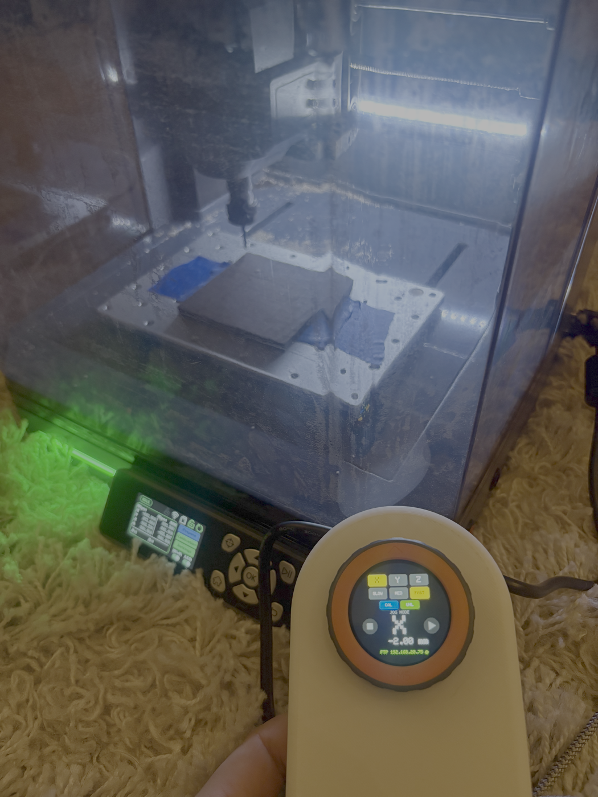

Steps:
/dev/tty.usbmodem… on macOS or COMx on Windows).
Only do this the first time. The web installer above wipes
the pendant's flash, which means you'll have to redo WiFi setup after each
use. For every subsequent firmware update, use the built-in
Update firmware link at the bottom of
http://cubiko.local instead —
it does an over-the-air update that preserves your saved WiFi credentials
and won't brick the device if it fails.
After install, the pendant creates a WiFi network called
M5DialCubiko-Setup. Join it from your phone; a captive portal
lets you pick your home WiFi. See the
README
for details.
Once the pendant has joined your WiFi, open
http://cubiko.local/ from any
device on the same network — laptop, phone, whatever — and drag G-code files
onto the page. The pendant serves its own drag-and-drop UI, so there's
nothing to install on the computer.